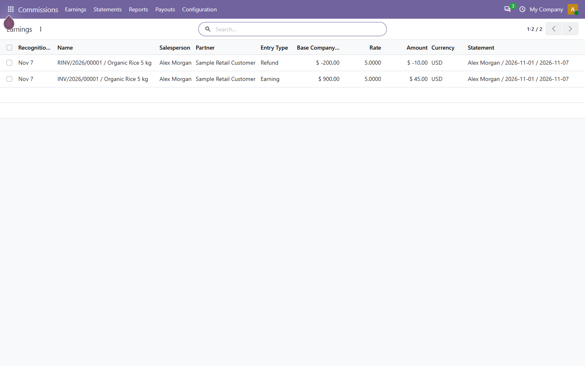
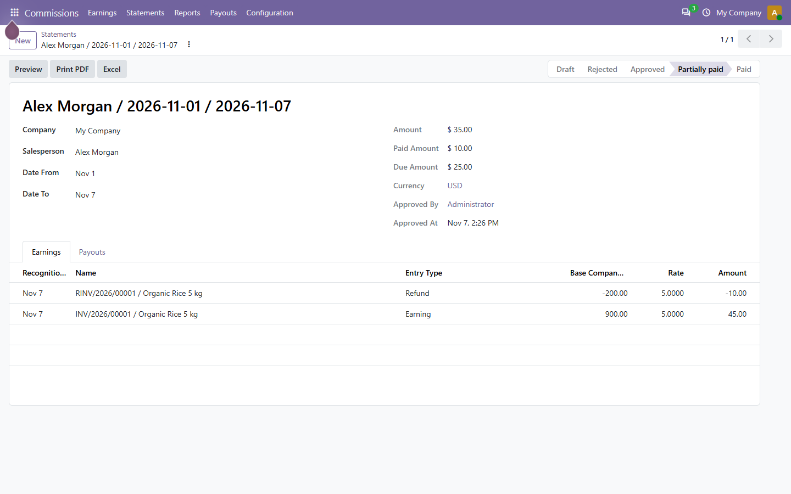
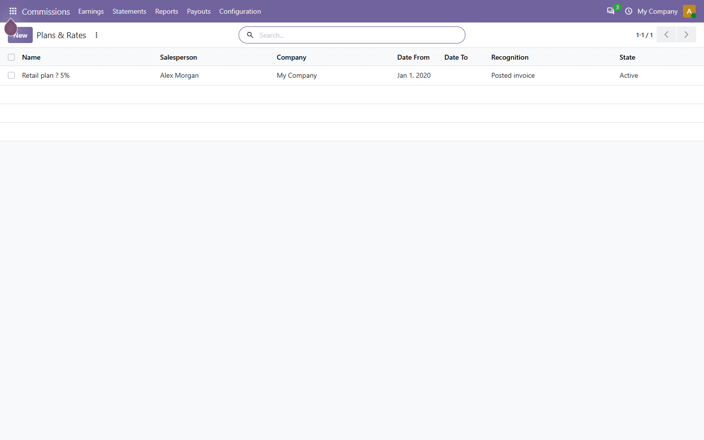

ERPCloud · Odoo 20 Community
See how each posted invoice earns commission, review refunds, approve statements and record payouts.
Free · LGPL-3 · No ERPCloud account required
Set rates by product, category or default. Choose recognition at invoice posting or full customer payment. Each earning keeps its source and calculation snapshot. A credit note linked to the original invoice creates a negative earning at the original rate.

Managers collect earnings for one salesperson and period, resolve exceptions, and approve. A draft can be rejected with a reason and reopened. Approved figures stay in the ledger; corrections use reasoned adjustments. Finance records partial payouts with an external reference. Payouts do not create bank, payroll or accounting transactions.

The statement has an HTML preview and a QWeb PDF with signatures. The report dialog previews a filtered table and exports a numeric XLSX workbook with Summary and Details sheets. All amounts use the same saved earnings.

erpcloud_sales_commission into an addons path, update Apps and install it. Odoo installs the declared Sales and Invoicing dependencies.Scope: one salesperson per sale source. Partial customer payments are not prorated. Ambiguous or unlinked sources appear in Exceptions. No POS, payroll, team split or automatic payment integration. Normal installation adds no sample records. Odoo Online cannot install custom Python modules.
Support: info@erpcloud.vn